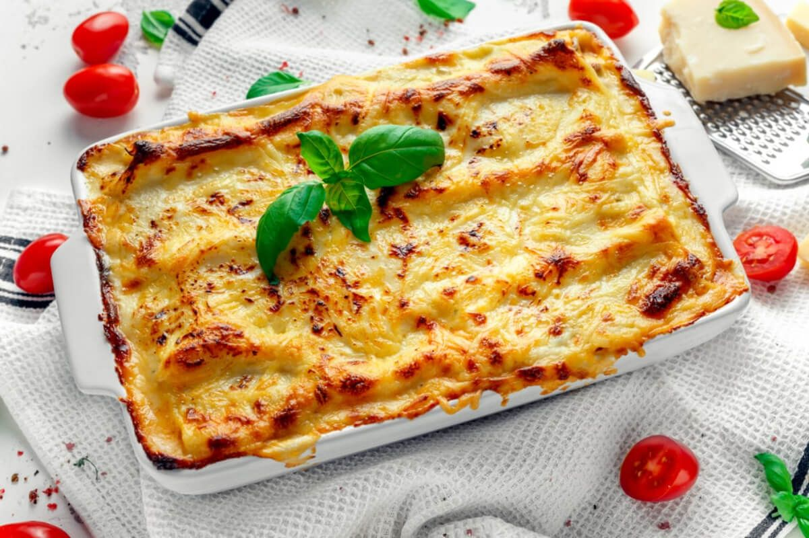

Lasagna recept

Az internet legjobb lasagne receptjét fogjátot itt megtalálni
De fontos, hogy minden összetevőt pontosan mérjetek
Összetevők
- Olaj
- 1 fej vöröshagyma
- 2 gerezd fokhagyma
- 1kg darálthús
- só
- bors
- 1 liter paradicsomszósz
- bazsalikom
- 10dkg vaj
- 10dkg liszt
- 1l tej
- 50dkg lasagne tészta
- 10dkg sajt
Elkészítés
- A lasagne elkészítéséhez kevés olajon megdinszteljük az apróra vágott vöröshagymát a fokhagymával együtt, majd rátesszük a darált húst, és nagyobb lángon egészen addig pároljuk, amíg a hús kifehéredik.
- Sóval, borssal ízesítjük. Ezután pici vizet öntünk alá, és fedő alatt puhára pároljuk. Amikor már majdnem elkészült, felengedjük a paradicsomszósszal, bazsalikommal ízesítjük, és jól összefőzzük.
- Közben a vajat serpenyőben felmelegítjük, beleszórjuk a lisztet, és addig hevítjük, míg el nem kezd kifehéredni. Felengedjük a tejjel, sózzuk és nem túl sűrű besamel szószt főzünk belőle. Ha nagyon sűrű lenne, kevés tejjel higíthatjuk.
- Egy közepes méretű tepsit vékonyan kiolajazunk. Az aljába teszünk kevés ragut, több besamelt, majd jön rá a lasagne tésztalap. Ismét a ragu, a besamel, a tészta váltakozva. A lényeg, hogy a lasagne tetejére kerüljön az utolsó adag ragu.
- Megszórjuk reszelt sajttal, alufóliával letakarva, 170 fokra előmelegített sütőben, kb. 35-40 perc alatt készre sütjük (amíg a tészta megpuhul, a sajt szépen megbarnul).